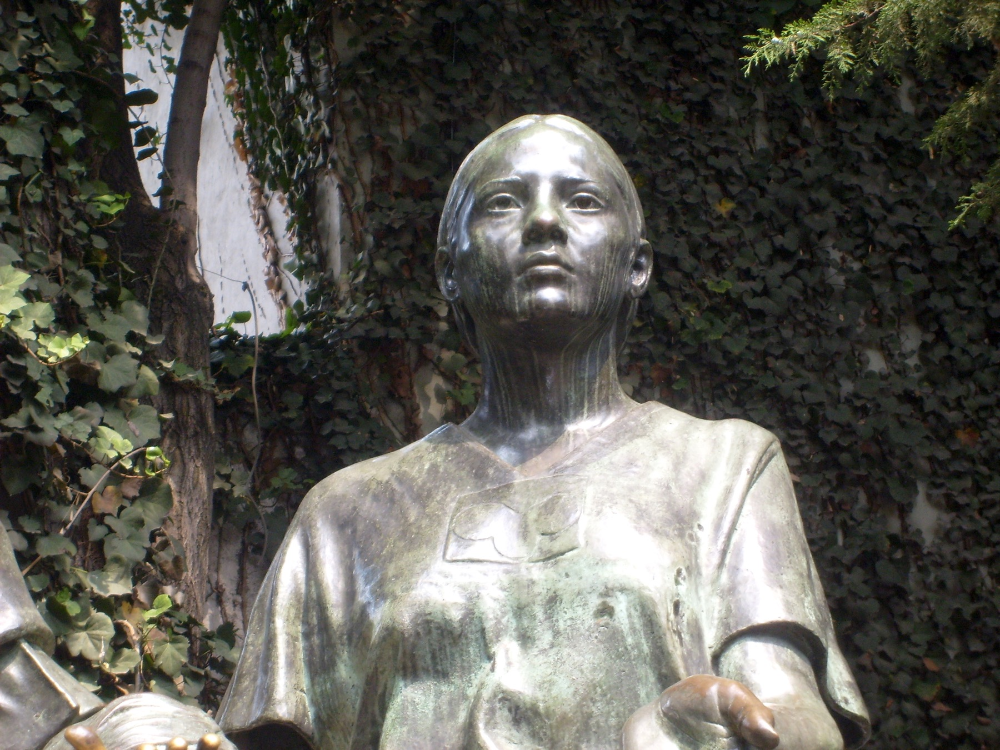
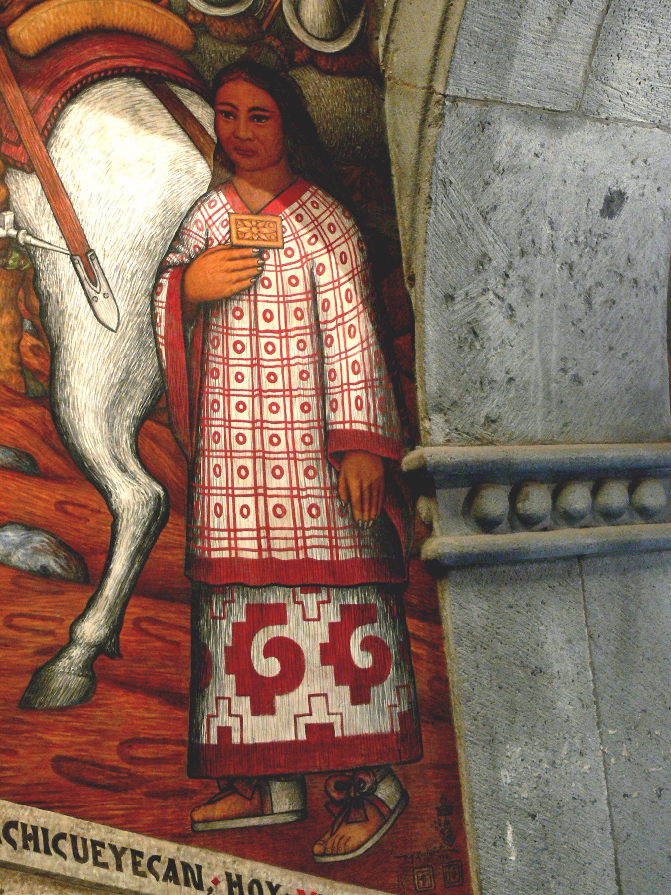

一位被奴役、转交，并重新命名的纳瓦女性。
她约生于 1500 年，原名没有留下。童年时被卖入奴隶网络，1519 年又被交给科尔特斯的远征队。
00时间的女儿 · 003
LA MALINCHE / MALINTZIN / DOÑA MARINA
谁背叛了背叛者？
一位被转卖的纳瓦女孩，后来成为连接纳瓦特尔语、玛雅语与西班牙语的翻译者。 她影响了征服，也在数百年后被写成“背叛”的象征。

01一个人 · 三个名字
每个名字都来自一套权力关系：出生的世界、受洗后的秩序，以及后世替她制造的意义。
三个名字同时保留：出生世界、殖民秩序与后世记忆，先后在同一个人身上留下名称。
02先认识她
一分钟认识马琳切，再进入她生活过的世界。
她约生于 1500 年，原名没有留下。童年时被卖入奴隶网络，1519 年又被交给科尔特斯的远征队。
她先把纳瓦特尔语译成玛雅语，后来又学会西班牙语。谈判、停战、结盟与命令因此能够跨越语言边界。
她帮助征服更有效地发生，也长期处于被奴役与依附之中。本网页追问影响、选择与责任如何区分。
03阅读坐标
由现存记录、时间线与多方材料相互支持。
面对冲突或不足的证据，保留“可能”。
组织因果的讲述方式，不替代私人证词。
名字、断裂、湖面与红线构成当代设计语言。
十六世纪初的中部美洲没有统一的“墨西哥国家”。数百座城邦各有统治者、军队、神庙与政治选择。
先看城邦、三国同盟、贡赋、宗教与奴隶制度，再回到马琳切的童年。
05中部美洲 · 城邦林立
城市及其周边土地组成独立或半独立的政治单位。共同语言、贸易与宗教传统让它们相互联结， 却不会自动让它们服从同一个统治者。

06三国同盟 · 贡赋圈
1428 年以后，特诺奇蒂特兰、特斯科科与特拉科潘结成三国同盟。 征服地区通常保留地方统治者，但必须定期交出棉布、可可、羽毛、粮食、贵重物与劳力。
历史事实“阿兹特克”是后世常用总称；这里用“墨西加”指特诺奇蒂特兰的主要群体。

07神祇 · 战争 · 祭祀 · 奴役
中部美洲各政体拥有不同的地方传统，也共享相互关联的历法、神祇与祭典。 仪式安排农耕、战争和王权活动；统治者借祭祀展示自己能够维系人与神的关系。
08约 1500 · 奥卢特拉
她大约出生于今天墨西哥湾沿岸附近。具体年份、地点与出生名都无人知晓。 奥卢特拉附近连接纳瓦语与玛雅语世界，也连接海岸贸易、地方权力与人口转卖网络。

这片边缘地带连接纳瓦语与玛雅语世界，也连接贡赋网络、海岸贸易与地方权力。
09贵族少女 · 史料线索
征服者记录称她是地方首领之女。她后来能在统治者面前使用礼仪性很强的纳瓦特尔语， 也熟悉贡赋、称谓和外交程序；这些线索支持贵族出身的可能性。
她出身地方贵族家庭，但记录来自多年后的西班牙叙述。
熟练使用宫廷式语言通常需要接近权力中心的训练。
出生日期、原名、童年感受与家庭决定没有第一人称证词。
10从贵族少女到奴隶
史料给出不同故事，现存证据不足以让其中一种完全胜出。
一种叙述称母亲再婚后，为保护新家庭的继承，把她交给了商人。这个故事流传最广，却也可能经过道德化整理。
另一种解释把她放进地方战争、政治交换或贡赋网络中。两种解释都指向同一处境：她没有自由选择离开家园。
11被迫南下的路线
她可能先被带到重要贸易节点希卡兰戈，后来又进入玛雅语世界的波顿查恩。 地理位移同时切断了亲族、身份与原有语言环境。

12在陌生世界活下来
在玛雅语世界生活多年后，她掌握当地语言。学习语言可以是适应，也是被迫生活留下的技术。
语言先救她活下去，后来也被战争征用。此时她不知道西班牙在哪里，也不知道这些人的远征将走向哪里。
故事暂时跟随她能够看到的世界：船、马、金属武器、陌生语言，以及战败后的命令。

141519 · 波顿查恩战败
陌生远征队与波顿查恩军队交战。当地领袖求和时交出粮食、黄金和二十名女性； 马琳切是其中之一。她没有选择参战，也没有选择被当作礼物。
马与金属武器造成陌生而强烈的冲击。
地方领袖通过礼物和人质安排求和。
她与十九名女性一起被交给远征队。
她从一个不自由的主人手中进入另一套不自由秩序。

15受洗 · 重新命名
女性们先接受洗礼，再被分配给远征队成员。新名字把她纳入基督教秩序，没有取消她被占有和转交的处境。
16语言带来的位置变化
远征队原有的翻译阿吉拉尔会西班牙语和玛雅语，却不会纳瓦特尔语。 当马琳切能把纳瓦特尔语译成玛雅语，一条完整的对话链突然出现。
她同时熟悉纳瓦特尔语和玛雅语，还理解地方礼仪与政治称谓。
尊称显示西班牙人承认她的贵族举止和重要性，却不等于她获得自由。
她从被分配的女性，变成科尔特斯必须带在身边的语言与外交行动者。
17最初的翻译链
每个词都带着无法直接替换的政治含义。
纳瓦特尔语 → 玛雅语 → 西班牙语
征服者的概念通过她进入另一个政治宇宙。
18称呼随着翻译扩散
纳瓦语使用者把 Marina 与敬称后缀 -tzin 结合成 Malintzin； 西班牙语记录又把它写成 Malinche。
一些纳瓦语叙述也用这个名称称呼科尔特斯，因为他的声音总是经由她传出。

19公开的翻译者 · 私下的不自由
她在公开场合站在统治者与使者之间，拥有越来越重要的发言位置； 私下仍依附于科尔特斯，并后来为他生下一个儿子。
她没有留下第一人称证词。在奴役与军事占领关系中，自由同意的条件极其有限；因此可以讨论强迫与可能的性暴力，但不能编造她的私人感受。

20托托纳克 · 第一场政治谈判
托托纳克城邦长期向三国同盟交纳贡赋。新来者抵达后，地方领袖尝试利用他们改变力量平衡。 马琳切把不满、试探和条件送进远征队的决策中心。
她第一次看见：语言可以把地方怨恨转化为补给、向导与盟军。21她开始直接听懂陌生人
她在反复翻译中学习西班牙语，也逐渐听懂这些人来自一个遥远王国， 以国王和基督教之名要求臣服、改宗与财富。
当她能够绕过阿吉拉尔直接翻译，信息更快，她的地位也更高； 她同时更清楚远征队要把沿途政治关系变成占领。
22视野越过海岸
她逐渐听懂：这些人来自海洋另一端的王国，以君主和基督教之名远征。 要理解他们为什么抵达尤卡坦、科尔特斯如何获得远征权，以及他们所说的“占有”意味着什么，需要回到十五世纪的伊比利亚与大西洋。


24伊比利亚 · 王权与征服者
卡斯蒂利亚与阿拉贡的王权结盟，并在格拉纳达陷落后结束长期的伊比利亚战争。 军事扩张、宗教统一与王权竞争随之加速转向海洋。

25哥伦布抵达加勒比
卡斯蒂利亚王室支持哥伦布横渡大西洋。他抵达的是加勒比海岛屿，并误以为接近亚洲。 随后更多航行把人员、疾病、武器、牲畜和殖民制度带入美洲。
26什么是西班牙殖民地？
殖民者建城、任命官员、征收财富、要求改宗，并把原住民劳力分配给征服者。 加勒比岛屿成为后续远征的港口、兵源、物资库和政治试验场。
用欧洲式市政机构宣布新的合法秩序。
黄金、农产与劳力被纳入殖民经济。
教会与王权一起重塑生活和合法性。
征服者获得对原住民社区征取劳役与贡赋的权利。

27科尔特斯在古巴
伊斯帕尼奥拉与古巴的殖民据点，让远征者熟悉了强迫劳动、夺取资源、建立据点与利用地方竞争。 科尔特斯也在加勒比殖民社会中积累人脉、财富与政治经验。
科尔特斯在古巴获得土地、劳力、财富和市政经验，也学会如何在殖民者之间经营权力。
历史事实具体暴力与制度在不同岛屿、时期并不完全相同；这里说明的是经验和网络，而非一条不可避免的命运。
281519 · 未获完全授权的远征
数百名西班牙人不足以单独征服中部墨西哥。他们的力量来自武器，也来自把地方人力、情报与补给接入远征。
规模有限，并且持续面临补给、疾病与内部权力冲突。
制造冲击和战术优势，但这些物件不会自动带来胜利。
真正放大队伍的，是每到一地重新结成的关系网络。
马琳切的重要性正在这里出现：她让陌生的政治世界能够被询问、试探与谈判。
29她已经明白远征的方向
她听懂了西班牙人的目标，也看到沿岸城邦正在利用新来者对抗贡赋秩序。 此后她不只回答语言问题，还主动解释路线、礼仪、盟友与危险。
留在远征队中心，比再次被分配更可能保住生命与位置。
原文以叙事框架提出：被家庭与地方秩序抛弃的经历，可能影响她的判断。
她意识到自己的语言、记忆和政治知识是稀缺力量。
帮助远征前进，也使她更深地参与此后发生的征服与暴力。
30韦拉克鲁斯 · 法律上的脱离
古巴总督试图撤销远征。科尔特斯让支持者在海岸建立韦拉克鲁斯市政机构， 再由市政官员直接任命他为总司令，绕过古巴总督的权力。
这套法律安排让一场有争议的远征，转成以西班牙国王名义继续的军事行动。
31先认识特拉斯卡拉
特拉斯卡拉是由多个政治中心共同构成的强大政体。它与墨西加人同属纳瓦语世界， 却长期保持独立，并在三城同盟的包围与贸易压力下持续对抗。
共同语言不等于共同国家，也不自动产生政治忠诚。
它拥有自身领袖、军队与目标，并主动选择下一步行动。
没有特拉斯卡拉等原住民盟军，几百名西班牙人无法独自完成征服。
32特拉斯卡拉 · 从战争到联盟
一支来历不明的武装力量进入领地，首先引发的是抵抗。数周冲突后， 双方才在损失、技术差距与共同敌人的现实中重新计算利益。
特拉斯卡拉军队把进入领地的陌生武装视为威胁，连续发动攻击。
西班牙军队一度接近崩溃，也用骑兵、钢制武器与村庄袭击制造压力。
马琳切翻译威胁、条件与政治称谓，使双方能够判断彼此真正能提供什么。
特拉斯卡拉领袖决定接待远征队，并把对三国同盟的长期敌意转化为军事合作。此后加入远征的原住民盟军远多于西班牙人。

33先认识乔卢拉
乔卢拉是重要的宗教与贸易中心，以羽蛇神信仰和巨型金字塔闻名。 它位于通往特诺奇蒂特兰的路线上，与墨西加政治网络关系密切； 西班牙—特拉斯卡拉联军进入这里，本身就是一次高度紧张的政治行动。

341519 · 乔卢拉大屠杀
联军在城中发动大规模杀戮。科尔特斯声称自己发现了伏击；特拉斯卡拉叙述强调旧怨与使者受辱； 后来的墨西加叙述则把责任归向特拉斯卡拉。各方都在为自身行动组织理由。
据称，一位乔卢拉女性向她透露伏击计划。但故事来自征服者叙述，可能也承担为“先发制人”暴力辩护的功能。
她是否、如何获得警告，以及信息影响多大，都需来源批判；发动并实施屠杀的决定仍属于持有军事指挥权的人。

351519 年 11 月 · 墨西哥谷地
从高地望下去，特诺奇蒂特兰位于特斯科科湖的岛屿上。它是三国同盟的政治中心，也是一个拥有市场、神庙、道路、渡槽与密集居民的巨大城市。
史实 Historical fact36初学者地图 · 城市如何运转
堤道把岛城与湖岸相连；独木舟承担日常运输；查普尔特佩克的渡槽把淡水送进城市。这样的结构带来繁荣，也让出入口成为战时的狭窄关口。

通向湖岸的陆路，也能被拆开、堵塞或争夺。
市场、粮食与人员依靠水路持续流动。
城市需要从湖岸取得可饮用的淡水。
371519 年 11 月 8 日 ·
蒙特苏马、科尔特斯与马琳切站在同一场会面中，却拥有完全不同的位置与权力。

用礼物、称谓与住处安排来管理陌生来客。
把纳瓦特尔语转为玛雅语，再经赫罗尼莫·德·阿吉拉尔转成西班牙语；不久后，她开始直接使用西班牙语。
她让会面能够进行，却不拥有任何一方的军队或王权。
以西班牙王权、基督教与占有土地的逻辑理解这次进入。
38礼物 · 黄金 · 主权
双方都把礼物当作政治行动，但对礼物意味着什么并没有共同答案。
礼物可以确认来访者的地位、展示统治者的财富，并把危险的陌生人纳入一套礼仪秩序。
黄金被理解为可带回欧洲的财富，也强化了继续索取、搜查和控制这座城市的冲动。
学术解释 Interpretation翻译可以传达礼物的名称与致辞，却不能自动消除两套政治制度之间的差异。
391519 年 11 月 · 数日后
科尔特斯以海岸一场冲突中西班牙人死亡为借口，带武装人员进入蒙特苏马的住处，迫使他迁往西班牙人的驻地。统治者仍能发布命令，却已受到监视与控制。
401520 年春 · 两个战场
古巴总督派潘菲洛·德·纳尔瓦埃斯率军抵达，命令科尔特斯停止未经授权的行动。科尔特斯离开都城迎战，并把对方士兵吸收到自己的队伍。
科尔特斯把特诺奇蒂特兰内的西班牙部队交给佩德罗·德·阿尔瓦拉多。蒙特苏马仍被扣押，宗教节庆即将举行，双方互不信任继续上升。

411520 · 托斯卡特尔节
贵族与祭司聚集在大神庙举行宗教节庆。阿尔瓦拉多的士兵封锁出口，袭击正在仪式中的参与者。杀戮引发城市范围的反击。
西班牙叙述常声称自己发现了袭击计划；原住民叙述强调无武装庆典遭到突袭。动机仍有争议，阿尔瓦拉多部队发动大规模杀戮则有多方记录。
42调停失败 · 记录冲突
科尔特斯回到都城后，西班牙人让被扣押的蒙特苏马向城中人群讲话，希望他命令抵抗者停止进攻。但他的权威已经破裂。
蒙特苏马被城中人投掷的石块击伤，随后死亡。
西班牙人在撤离前杀死了被拘押的统治者与贵族。
证据边界关于他如何受伤、如何死亡，现有记录无法合并成一个确定版本。


431520 年 6 月末 · 悲痛之夜
西班牙人与盟军试图沿塔库巴堤道离开。守军从陆地与独木舟发动攻击；狭窄通道、被拆开的桥面、携带的黄金与混乱，使大量人员死于战斗、踩踏或溺水。
44败退之后
悲痛之夜没有消灭科尔特斯的远征军。幸存者撤到特拉斯卡拉，那里提供庇护、粮食、战士与重新组织的空间。与此同时，更多西班牙人和物资从海岸进入。
共同敌人、战争收益与现实风险让联盟得以延续。
科尔特斯败退时，兵力反而比最初登陆时更多。
韦拉克鲁斯连接船只、武器、人员与加勒比殖民地。

451520 年秋 · 疫病
对这种疾病缺少既有免疫的人群大量染病。天花夺走平民、战士与统治者奎特拉瓦克的生命，也破坏照料、生产与军事组织。
疾病造成巨大破坏；城市最后陷落还与原住民盟军、湖面封锁、武器、饥饿和数月作战共同相关。
TLAXCALA
461520—1521 · 重组
科尔特斯需要的不只是欧洲武器。特拉斯卡拉与其他城邦提供数量更多的战士、熟悉地形的向导、粮食、搬运者和独木舟。不同盟友的目标并不完全相同。
47特斯科科湖 · 船只工程
船体部件从特拉斯卡拉经陆路搬运到湖边，在特斯科科重新组装。它们比独木舟更适合搭载火炮与武装人员，改变了湖面战斗的条件。

491521 年春夏 · 数月围攻
联军每天推进、填平缺口、拆毁房屋，又在夜间遭遇守军反击。胜负由一连串反复争夺累积而成。
渡槽与湖面交通遭到攻击。
外围城镇和运输路线逐渐被切断。
堤道缺口不断被填平又挖开。
天花和其他疾病持续消耗人口。
火炮、火枪与焚烧摧毁街区。
饥饿和疲惫不断压缩抵抗空间。
50城市内部 · 瓜乌特莫克
蒙特苏马死后，奎特拉瓦克继位不久便死于天花；年轻的瓜乌特莫克随后成为统治者。守军利用街巷、屋顶、堤道缺口与独木舟反复反击。
抵抗者面对的，是人数庞大的原住民联盟、欧洲武器、封锁、疾病与饥饿的叠加。
51谈判 · 投降条件
围城期间，双方多次交换要求。马琳切参与翻译，希望让瓜乌特莫克一方接受投降；守军仍在废墟、疾病与饥饿中继续抵抗。
传递条件、解释回答、帮助会面发生。
军队是否停止进攻、投降后如何处置城市与居民。

521521 年 8 月 13 日
瓜乌特莫克试图乘独木舟离开时被俘。联军进入残破的城市，大量居民已经死于战斗、疾病与饥饿；幸存者被迫离开。
特诺奇蒂特兰的陷落结束了这场围城，也开启了对城市、土地与人口的殖民重组。
531522 年 9 月 · 另一条航线
麦哲伦远征的幸存船只维多利亚号完成环球航行。马琳切参与的战争与这次航行发生在同一扩张时代：欧洲王权、商人和征服者正在把海洋、贸易与殖民据点连接成更大的体系。
54城市与秩序被重建
西班牙人把特诺奇蒂特兰改建为墨西哥城。神庙石材被用于新的教堂与政府建筑，土地、劳役、贡赋与宗教生活被重新安排；原有居民和盟友仍在这座城市中生活并承担建设。
史实 Historical fact55约 1522 年 · 科约阿坎
马琳切与科尔特斯的儿子马丁在战争结束后不久出生。后来他被教会承认为合法子嗣，并被送往西班牙成长。
解释边界“第一个混血儿”是后世神话化说法；美洲不同人群之间的孩子早已存在。
56战争结束以后
新的殖民政府仍需要与不同地区的统治者、向导、劳工和盟友交涉。马琳切继续随科尔特斯参与会面与远征，她的语言能力仍然具有政治价值。
在殖民官员与地方统治者之间解释身份和要求。
参与新的财产、贡赋与劳役关系。
在跨地区行动中继续担任沟通者。
作为母亲、受洗女性与殖民社会中的有产者被记录。
57科约阿坎 · 殖民首府早期
科尔特斯最初从科约阿坎管理新领地。马琳切在那里生活并生育马丁，也继续出现在远征与谈判记录中。她接近权力中心，却仍受科尔特斯、婚姻制度与殖民秩序支配。
581524—1526 · 婚姻与洪都拉斯远征
马琳切随科尔特斯参加前往洪都拉斯的远征。途中或前后，她与西班牙军官胡安·哈拉米约成婚，并有一个女儿。婚姻使她在殖民法律中获得新的身份，也把她重新安置进男性主导的财产与家庭关系。
她本人对婚姻的态度没有留下直接记录。具体安排、交换条件与她能否拒绝，都不能写成已经确定的事实。
59故乡方向 · 记录中的重逢
贝尔纳尔·迪亚斯后来写道，远征途中马琳切见到了母亲与同母异父的弟弟。她没有惩罚他们，并表示自己已拥有新的生活。
这段叙述来自多年后的征服者回忆录。它提供了重逢故事，也可能把她塑造成宽恕、改宗与接受殖民新身份的范例。
历史记录 + 来源批判601520 年代后期 · 档案变薄
马丁后来被科尔特斯带往西班牙。马琳切与哈拉米约留有财产与法律记录，但关于她何时、如何去世，材料并不一致；一种常见推测把她的死亡放在 1529 年前后。
上下集在此直接播放；站内其他位置不使用视频封面。
61五百年的改写
征服发生在十六世纪，“马琳切等于民族叛徒”的熟悉形象却在几百年后逐渐形成。要理解这个指控，必须先看是谁、在什么时代使用了她。
62早期档案 · 同一个人，不同位置
 图像手抄本
图像手抄本一些原住民图像把她画得醒目，显示翻译在会面与行军中的重要性。
科尔特斯向国王汇报功绩时很少给她独立位置，叙事中心是自己的行动与合法性。
征服者回忆录贝尔纳尔·迪亚斯强调她的语言与外交作用，也用多年后的殖民视角组织她的人生。
631826 · 墨西哥独立之后
ANÓNIMO / 匿名出版小说《希科滕卡特尔》把特拉斯卡拉抵抗者写成民族英雄，并把马琳切塑造成帮助外来征服者、背弃同胞的女性。这个形象服务于刚刚独立的墨西哥对忠诚、国家与起源的想象。
“叛徒马琳切”在这里获得了接近现代的政治含义。64后世文化寓言
文学和政治话语把她与几种“母亲”形象反复连接。下面是后世解释框架，不是她本人留下的身份。
殖民暴力被压缩成女性身体的屈辱，男性征服者的制度与军队反而退到背景。
她有时与“哭泣女”传说相连，被写成失去孩子、永远哀悼的幽灵。
她与马丁被用来象征墨西哥混血社会的诞生，同时掩盖这种诞生中的强迫与不平等。
65二十世纪 · 词语的政治
在现代墨西哥西班牙语中，malinchismo 常用来批评偏爱外国事物、贬低本国文化或向外部利益屈服。这个词把复杂的殖民历史浓缩成她的名字。
当一个女人的名字变成贬义词，谁的军事命令、殖民制度与联盟选择被省略了？
66二十世纪后期以来 · 重新打开档案
她先后经历转卖、被赠与、受洗与被安排婚姻，所有选择都发生在不平等关系中。
她学习语言、判断局势、参与谈判并影响结果；被强迫不等于完全没有行动。
承认她帮助征服发生，也要把军事与殖民决定归回掌握军队、王权和制度的人。
学术解释重读不会把她变成无辜圣人，而是恢复不同角色之间不对称的权力。
67时代错置 · 忠于谁？
马琳切出生时，现代墨西哥国家尚不存在。她来自帝国边缘的纳瓦语世界，后来被卖入玛雅语地区，又被交给一支陌生远征军。
68公共空间 · 谁来定义她
后世雕塑与壁画没有结束争论。它们选择把她画成母亲、翻译者、殖民起源或民族象征，也因此引发支持、抗议与重新安置。


69谁背叛了背叛者？
翻译、情报与谈判使科尔特斯一方更快理解局势、建立联盟并传达命令。她不是征服故事中可以删除的人。
科尔特斯、西班牙王权、殖民制度、武装人员与不同原住民盟友拥有不相等的决定权。共同历史不能压成一个女性的道德缺陷。
选择一个角度，继续检视“责任”与“选择”之间的距离；选择不会被保存或发送。
来源与证据边界
21 页中文原稿《马琳切：谁背叛了背叛者？》，按八章组织；两份中文字幕稿补充影像叙事。
本页使用来自 Gallica、Newberry Library 与 Wikimedia Commons 的公共领域或 CC 授权图像；自制地图仅用于其确实对应的路线与地点。
不连接分析服务，不设置跟踪 Cookie，不保存名字视角、地图选择或最终回应。